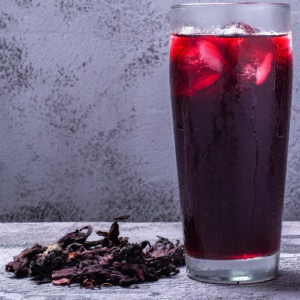
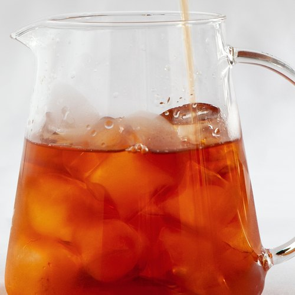
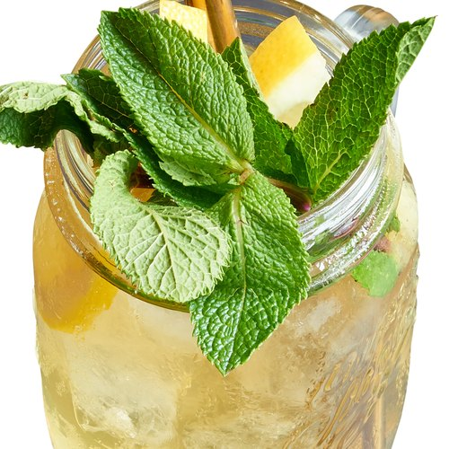

SANDO · la última carta del mazo
Después del último Signature y del secreto, una carta más: «Y además». Se llega pasando las cartas como siempre; los puntitos de abajo ya dicen que existe.
✕SND//WCH
ÚLTIMA · Y ADEMÁS
Y además

Pedido en grupo
Cada uno elige lo suyo desde el enlace. Con 5, el más barato va gratis.
Cada uno elige lo suyo desde el enlace. Con 5, el más barato va gratis.
BebidasDesde S/5 · sueltas o en combo



Tus favoritosLo que guardaste, a un toque de pedirlo otra vez.
Tus puntosCuánto tienes y qué te falta para el siguiente.
Tus pedidosPedir lo mismo, y en qué va el de hoy.
Fuerte: no agrega pantallas ni botones a las cartas; vive donde el cliente ya pasa el dedo. Débil: quien no llega al final del mazo no lo ve (por eso el grupo sigue también en el carrito).
WICHO · la misma hoja, desde el armador
Arriba a la derecha del armador, una píldora «Y además». Abre una hoja con lo mismo, en su mundo celeste. El armador queda detrás, sin perder el paso.
TAMAÑO 1/6
Y ADEMÁS ↓
Y además 
5
Pedido en grupoComparte el enlace. Con 5, uno gratis.
→
🥤
BebidasThe Bloom · The Midnight · The Cool
→
♥
Tus favoritosTus armados guardados
→
★
Tus puntosY el siguiente premio
→
↻
Tus pedidosPedir lo mismo
→
Fuerte: el armador no pierde el paso: es una hoja encima. Débil: es un botón más arriba; si estorba, puede ir como último paso del riel («Y además»).